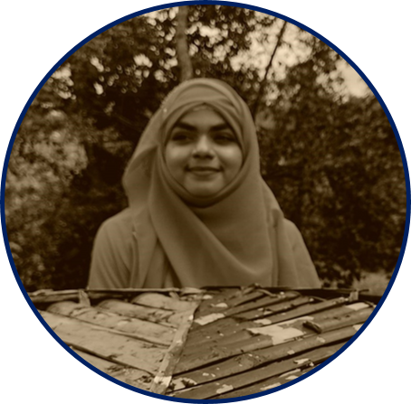

MAHABUBA MONJU
CONTACT
- Address: Vedvedi Muslim Para, Rangamati
- Cell: +8801551796193
- Email: mahabuba281298@gmail.com
TECHNICAL STACK
- Expertise: C, C++, Python, HTML5, CSS3, Bootstrap5, Sass, JavaScript.
- Comfortable: React.js, MySQL.
- Familiar: Wordpress.
- Cloud Platform: Github, Netlify.
- Tools: VS Studio Code, Sublime Text, NPM, Git Bash.
- Additional: Excel, Powerpoint and Latex.
LANGUAGE SKILL
- Bengali: Vernacular.
- English: Proficient in all aspects.
|
CAREER OBJECTIVE
Seeking a challenging yet rewarding career with a progressive organization that provides the opportunity for prescribed position.
To land a job where I can use my technical expertise, talent, originality, and honesty for the organization's betterment.
PROFESSIONAL EXPERIENCE
Undergraduate Lab Teaching Assistant,
Dept. of CSE, Rangamati Science and Technology University
- Conduct machine learning, deep learning, and software development lab classes as directed by the professor.
- Evaluate the student’s performance and provide necessary feedback.
Front-End Software Engineering Virtual Workshop,
Responsibilities:
- Design a specific task using Backpack Library.
- Setting up some task and customize application.
EDUCATION
- Bachelor of Science (Engg.): CSE,
RMSTU.
- Higher Secondary Certificate: BCIC College,
Dhaka, Bangladesh.
- Secondary School Certificate: Rangamati Govt Girls’ High School,
Chattogram, Bangladesh.
AWARDS AND ACHIEVEMENTS
- PHP with Laravel Framework
- Member of International Youth Summit 2020
- Programming Contest Certificate
- Web Development Certificate
- Digital Marketing Certificate
- Frelancer to Entrepreneur Certificates
- Workshop on Data Mining
|